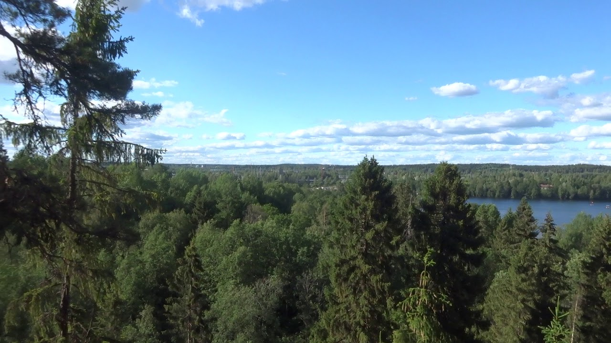

Tietoa Hikivuoresta
Hikivuori on Annalan alueen korkein kohta, joka kohoaa 156 metriä merenpinnan yläpuolelle. Se on yksi Tampereen seudun suosituimmista näköalapaikoista, josta avautuu henkeäsalpaavat näkymät Kaukajärvelle ja ympäröivään maisemaan.
Vuoren huipulla sijaitseva näkötorni tarjoaa esteettömät näkymät joka suuntaan. Erityisen vaikuttava näky on auringonlasku, joka värjää taivaan ja järven pinnan upeisiin väreihin.
Aktiviteetit
Patikointi
Hikivuorelle johtaa useita hyvin merkittyjä polkuja. Reitit soveltuvat sekä aloittelijoille että kokeneemmille patikoijille. Matka huipulle kestää noin 30-45 minuuttia.
Valokuvaus
Hikivuori on erityisen suosittu valokuvaajien keskuudessa. Parhaat valokuvaushetket ovat auringonnousun ja -laskun aikaan, jolloin valo on pehmeimmillään.
Näkötorni
Vuoren huipulla sijaitseva näkötorni on avoinna ympäri vuoden. Tornista voi ihailla maisemia kaikkina vuodenaikoina, ja se tarjoaa suojaa myös sateen yllättäessä.
Käytännön tietoa
- Pysäköinti: Hikivuoren juurella on ilmainen pysäköintialue
- Vaativuus: Keskitaso, jyrkkä nousu
- Kesto: 30-45 min ylös, 20-30 min alas
- Varusteet: Tukevat kengät suositeltavat
- Saavutettavuus: Polku ei sovellu liikuntarajoitteisille
Parhaat vierailuajat
Hikivuori on vaikuttava kohde ympäri vuoden, mutta erityisen kaunis se on:
- Syksyllä ruskan aikaan (syys-lokakuu)
- Kesäiltoina auringonlaskun aikaan
- Kirkkaana talvipäivänä, kun maisema on lumen peitossa